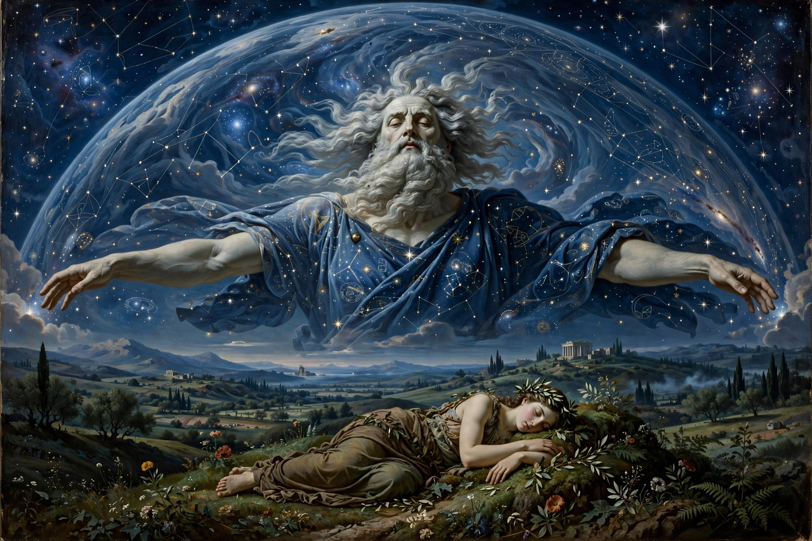

| Personification | The sky |
|---|---|
| Parents | Gaia (mother, in Hesiod) |
| Consort | Gaia |
| Offspring | The Titans, Cyclopes, Hecatonchires, Erinyes, Aphrodite (from his severed genitals) |
| Roman equivalent | Caelus |

Uranus (Ancient Greek: Οὐρανός, Ouranos, "sky" or "heaven") is the primordial Greek god personifying the sky. According to Hesiod's Theogony, Uranus was the son and husband of Gaia, the earth. Together they were the ancestors of most of the Greek gods, including the Titans.
Uranus covered the earth each night and fathered eighteen children with Gaia: the twelve Titans, the three Cyclopes, and the three Hecatonchires (hundred-handed giants). Hating his monstrous offspring, Uranus hid them in Tartarus within the earth, causing Gaia terrible pain. Gaia fashioned a great sickle of flint and urged her sons to overthrow their father; only Cronus, the youngest Titan, agreed. When Uranus next approached Gaia, Cronus ambushed him and castrated him with the sickle, casting his genitals into the sea. From the blood that fell on earth sprang the Erinyes (Furies), the Giants and the Meliae; from the foam in the sea arose Aphrodite.
Uranus's reign and violent overthrow form the first act of the Greek succession myth, later repeated when Cronus is overthrown by Zeus. The myth shows parallels with the Hurrian-Hittite Song of Kumarbi. The god's name was given to the seventh planet from the Sun, Uranus, discovered by William Herschel in 1781 — the only planet named after a Greek rather than a Roman deity.
See also: Twelve Olympians · Astarte